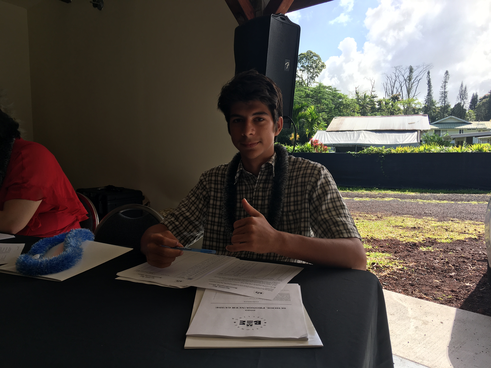

About Me
Aloha! My name is Levi Farinas. I was born in Hawaii with a passion for electrical engineering. I grew infatuated with this field from a young age, ever since my parents bought me my first soldering iron. As I got older, I read as much as I could about electronics, determined to learn the most I could. Whenever I wasn't busy with school or sports, I enjoyed building electronics projects.
But my life was uprooted with the 2019 eruption of Kilauea.  In one night, my childhood home and most of my possessions were destroyed.
I was distraught, but I applied myself to studies and sports. I participated in the World Eskrima Kali Arnis Federation (WEKAF) tournament, and became a world champion in stick fighting and knife fighting. Shortly thereafter, I earned my black belt in Taekwondo.
I went to high school in Pahoa and graduated first in my class at age 16 with a 4.091 GPA. I was selected as my school’s academic representative for Salute to the Graduates, and I took numerous college courses during high school.
But then I hit another roadblock in my goal of studying engineering: Coronavirus.
Due to the pandemic, I was unable to enroll at my community college's electronics course. Because of this, I went to school for IT instead.
At 18, I graduated from this program with highest honors, a 4.0 GPA, and numerous accolades. I was awarded the prestigous 'E Imi Pono award and was on the Dean's list for every term of my degree.
In one night, my childhood home and most of my possessions were destroyed.
I was distraught, but I applied myself to studies and sports. I participated in the World Eskrima Kali Arnis Federation (WEKAF) tournament, and became a world champion in stick fighting and knife fighting. Shortly thereafter, I earned my black belt in Taekwondo.
I went to high school in Pahoa and graduated first in my class at age 16 with a 4.091 GPA. I was selected as my school’s academic representative for Salute to the Graduates, and I took numerous college courses during high school.
But then I hit another roadblock in my goal of studying engineering: Coronavirus.
Due to the pandemic, I was unable to enroll at my community college's electronics course. Because of this, I went to school for IT instead.
At 18, I graduated from this program with highest honors, a 4.0 GPA, and numerous accolades. I was awarded the prestigous 'E Imi Pono award and was on the Dean's list for every term of my degree.

But I didn't forget my passion for electronics. During this time, I worked with a team to develop a sexual assault prevention wristband, garnering almost a thousand interested prospects in days. I've created several Japanese language learning tools, including a website and mobile app.
As a high school student, I designed and built a weather station for amateur storm watchers to contribute meteorological data to government agencies.
I earned the most advanced level of FCC amateur radio certification at 15, and conducted intercontinental radio communications for Red Cross simulated emergency drills. I've designed several new methods for long-distance wireless data transmission and write a blog about new designs for RF hardware, including phased arrays, transceivers, and general electronics. It can be found here
I also wrote a book titled "The Simple Guide to Software Defined Radio", which I will explain more about later.
After graduating, I plan to obtain a career as an RF engineer, which will allow me to continue developing systems like these to improve the lives of our community.
My Goal
My lifelong goal is to study electrical engineering. As a child and teen, I devoted countless hours to learning more about this field and trying to help my community. I believe nothing will satisfy my curiosity other than obtaining a formal education in this field. I was incredibly fortunate to have been accepted to the UH Manoa College of Engineering, which I will attend next semester. But I need your help. I am currently working 3 jobs to raise money for college, yet I've saved barely a third of the cost of a single year to attend. Thus it is with utmost gratitude that I ask for your support in the next chapter of my life.
The Book
I began writing The Simple Guide to Software Defined Radio at age 15. I have been fascinated by the field of radio for a long time, and it perfectly complements my interest in electrical engineering. Software Defined Radio is a new paradigm in radio design, utilizing digital signal processing algorithms to demodulate radio signals, instead of purpose-built hardware. This means that this technology can be much more flexible, practical, and cheaper than traditional radios. I realized that most literature regarding Software Defined Radio was very academic and abstract, lacking in appeal for beginners. Thus, I sought to consolidate the essentials into a single, small volume that anyone can read. It took me a couple years, but I am proud of the result. After readind this book, you will understand:
- The physics of electromagnetic waves
- RF propagation
- Digital Signal Processing
- ADCs, DACs, FPGAs, and other SDR-related technologies.
- Computer software
- How a radio works (both traditional and software-defined)
- Antennas
- And more!
It is my belief that after reading this book, you will possess a solid foundational understanding of this fascinating technology.
To fund my college education, I am selling copies of this book for $25. When purchasing your book, please ensure that your address is accurate, so that it will be sent to the right place. Thank you very much for your support!